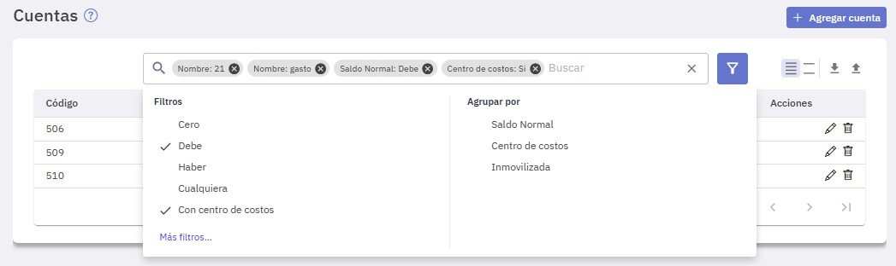
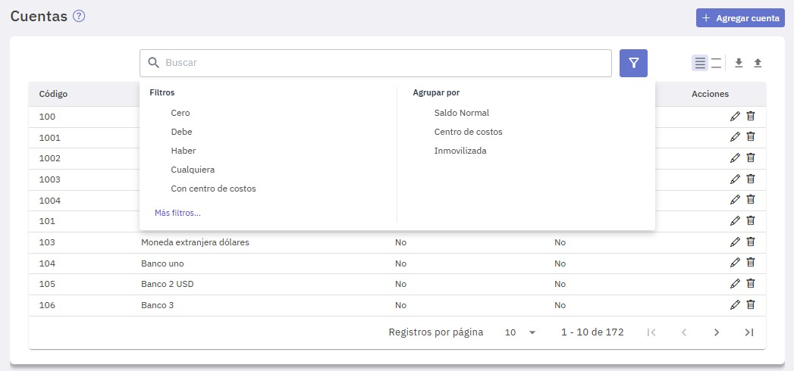
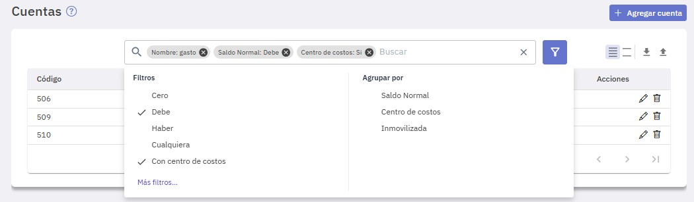
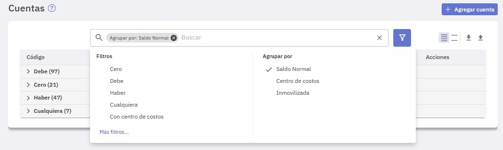
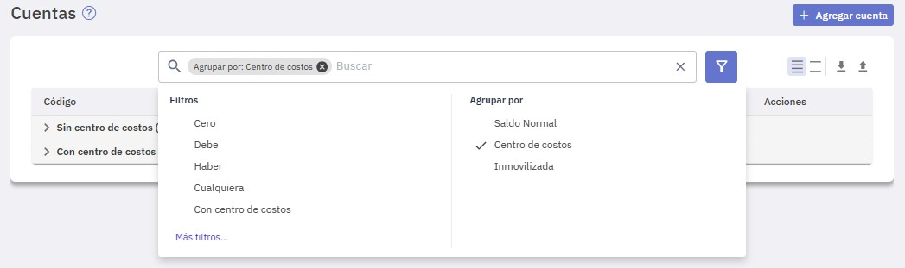
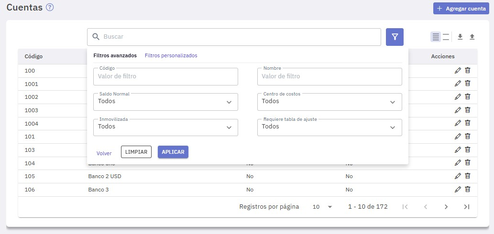
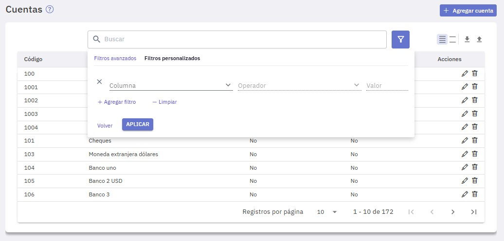
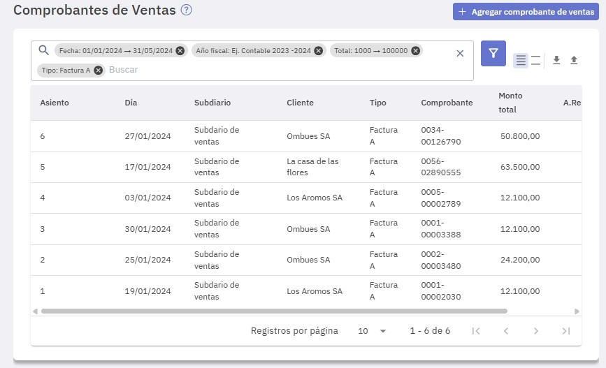

Tips para operar
Búsquedas y filtros
Esta funcionalidad facilita la búsqueda de uno o varios elementos en las tablas del sistema, como, por ejemplo, clientes, comprobantes o cuentas. En todas ellas se opera de la misma manera a través de la barra de búsqueda con filtro.

En dicha barra se concentran tres mecanismos de búsqueda distintos (búsqueda por texto, filtros rápidos y filtros personalizados o avanzados) permitiendo combinarlos libremente para obtener el conjunto de datos requeridos.
Búsqueda por texto
Esta búsqueda es el modo de uso más inmediato, escribís un texto y busca en todos los datos de tipo texto aquellos que incluyan, en alguna parte, el texto que escribiste.
Por ejemplo, si estas buscando cuentas de gastos en la tabla de cuentas, podés escribir” gasto” en el buscador de la grilla.
A medida que vas escribiendo se despliega una ventana con dos secciones diferenciadas.
- Buscar en
-
Coincidencias

La sección “Buscar en” ofrece buscar el texto que ingresaste en todos los campos de tipo texto de la tabla, para que selecciones uno de ellos.
Este modo es el que podés usar cuando sabés en que campo de la tabla buscar, pero no conoces el dato exacto a buscar. Al seleccionar uno de los campos que se ofrecen, éste queda representado como una etiqueta en la barra de búsqueda; la misma puede quitarse en cualquier momento con la “✕” sin necesidad de rehacer la búsqueda desde cero. Si por ejemplo seleccionás “Nombre” se precargan en la grilla las cuentas que incluyen “Gasto” en sus nombres.
Luego, podrás buscar ahí las cuentas que te interesan, directamente, o aplicando mas filtros.

La sección “Coincidencias” muestra en una lista todos los registros que incluyen el texto ingresado como una vista previa. Si encontrás el que buscás en dicha lista y lo seleccionás, éste se carga directamente en la grilla.
Este modo es el más directo: sirve cuando ya sabes qué registro específico necesitás y preferís seleccionarlo, directamente.
Como mencionamos antes, podés hacer búsquedas combinadas como, por ejemplo, buscar cuentas cuyos códigos comiencen con 55 y sus nombres incluyan “gasto”.

Filtros
Los filtros son accesibles a través del ícono de embudo.

Se pueden establecer filtros por todos los campos que tienen un conjunto de opciones determinado; por ejemplo: Estado (Activo, Inactivo), Editable (Si, No), Tipo de documento (DNI, CI, DNU); por rango de fechas; por importes de comprobantes; nombres de clientes, etc.. Los tipos de filtros que se ofrecen dependen de los tipos de datos que tenga la tabla donde se está efectuando el filtrado.
Pueden definirse varios filtros para establecer condiciones de búsqueda, cada uno de ellos se exhibe en la barra de búsqueda mediante una etiqueta integrándose con el resto de las condiciones ya establecidas. Cuando se establecen varias condiciones se sigue la siguiente lógica:
- Si las condiciones se establecen para un mismo dato (columna), éstas se combinan con un “o”. Por ejemplo, en la tabla “Cuentas”, las etiquetas “Saldo Normal: Haber” combinada con la etiqueta “Saldo Normal: Cero”, traerán las cuentas que cumplen con cualquiera de las dos.

- Si las condiciones se establecen para distintos datos (columnas), éstas se combinan con una “y”. Por ejemplo, en la tabla “Cuentas”, las etiquetas (“ Código: 10” e “Inmovilizada: No”, traerán solo las cuentas que cumplen ambas condiciones a la vez.

No hay límite en la cantidad de condiciones que pueden establecerse, una vez definidas, si se requiere, pueden eliminarse individualmente con la “X” a la derecha de cada una de ellas o en forma total con la que figura a la derecha.

Filtros rápidos
Los filtros rápidos son los que se presentan (en la columna de la izquierda) al presionar el embudo.

Cada casillero que tildás agrega una etiqueta a la barra de búsqueda, integrándose con el resto de las condiciones que ya hayas establecido y bajo la misma lógica de combinación (o / y) que mencionamos antes. Esto te permite acotar el listado por determinados atributos, sin necesidad de escribir nada.
En el siguiente ejemplo el resultado de la búsqueda trae las cuentas con el texto “gasto” en su nombre, definidas con saldo normal al debe y que se administran por centros de costos.

Agrupar por
La opción “Agrupar por”, a diferencia de los filtros, no reduce la cantidad de registros que se muestran, sino que los reorganiza.

Si elegís un campo de agrupamiento, en el ejemplo "Saldo Normal", la grilla muestra los registros separados en bloques, uno por cada valor posible del campo que elegiste, en este caso, Debe, Cero, Haber, Cualquiera.
Junto al nombre de cada grupo se indica, entre paréntesis, la cantidad de registros que contiene; cada grupo puede expandirse o contraerse con la flecha (disponible a la izquierda) para ver o esconder los registros que agrupa.
La opción de agrupamiento activa se marca con un ✓ en el menú, y solo puede haber una seleccionada a la vez: si elegís otro campo (por ejemplo, Centro de costos), el agrupamiento cambia y la grilla se reorganiza según el nuevo criterio.

Al igual que ocurre con las etiquetas de búsquedas y filtros, la agrupación elegida queda representada como una etiqueta en la barra de búsquedas y puede quitarse con la ✕ que figura a su derecha.
Filtros avanzados y personalizados
El enlace en “Más filtros…” te permite acceder a las opciones de filtros avanzados y personalizados.

La solapa “Filtros avanzados” muestra todos los campos de la tabla; el tipo de dato de cada campo determina que tipo de condición se puede aplicar, si el campo es de tipo:
- Texto: escribís un texto y busca todos los registros que lo contengan.
- Numérico: indicás un rango, desde un valor hasta otro, y busca todos los registros que se encuentren comprendidos entre ellos.
- Fecha: indicás un rango, desde una fecha hasta otra, y busca todos los registros que se encuentren comprendidos entre ellos.
- Lista de opciones fijas: seleccionás un valor puntual de la lista de opciones y filtra los registros a mostrar por dicho valor.
Una vez que completes los campos que te interesan, presionás Aplicar y se muestran en la grilla los registros que correspondan.
Este modo de filtrar te será de utilidad si necesitas localizar un elemento conociendo la información de varios de sus campos a la vez, incluyendo rangos numéricos o de fechas, que no se pueden expresar con una simple búsqueda de texto.
Filtros personalizados
Los filtros personalizados permiten armar reglas propias, una debajo de otra, eligiendo en cada una de ellas una columna, una condición y un valor.

Las condiciones disponibles varían según el tipo de campo elegido y pueden ser del tipo:
- Contiene
- No contiene
- Igual
- Distinto
- Empieza con
- Termina con
- Mayor que
- Menor que
- Entre
- Tiene valor
- No tiene valor
Podés agregar todas las reglas que necesites y luego presionar “Aplicar” para activarlas.
El siguiente es un ejemplo de búsqueda de facturas A, con fechas e importes comprendidos en determinado rango, del año fiscal activo.

Si ni con la búsqueda por texto, ni con la búsqueda de filtros rápidos y avanzados te alcanza para indicar la condición requerida para encontrar los registros que necesitas ubicar, con este tipo de filtros que combina operadores específicos, seguramente podrás obtener el resultado esperado.
Ordenamientos
En las pantallas donde se listan datos, los mismos pueden ordenarse por diferentes columnas de manera ascendente o descendente.

Para ordenar por alguna de las columnas, hace clic sobre ella y verás (a la derecha de la misma) una flechita que indica que los datos están ordenados en forma ascendente  .
.
Si volves a hacer clic, los ordenará en forma descendente  . Con cada clic se cambia el ordenamiento de los datos de la columna donde estás ubicado.
. Con cada clic se cambia el ordenamiento de los datos de la columna donde estás ubicado.

Colapsar y expandir informes
En el encabezado de los informes dispones de los botones "Colapsar" y "Expandir". El primero muestra una línea por cada asiento, el segundo incluye toda la información. El siguiente es un ejemplo de informe del diario colapsado.

En los informes colapsados, haciendo clic en una línea, desplegás su información en forma detallada. Acá te mostramos la información detallada correspondiente a uno de los asientos del informe.

En otros listados, como en la emisión de los balances, podés seleccionar la sección a listar presionando  , como así también los niveles visibles a listar
, como así también los niveles visibles a listar  . Debajo te mostramos un ejemplo de la emisión de un balance de sumas y saldos con nivel visible 2.
. Debajo te mostramos un ejemplo de la emisión de un balance de sumas y saldos con nivel visible 2.

Búsquedas de datos
Cuando tenés que ingresar un dato en una pantalla que diste de alta en otra tabla, como por ejemplo una cuenta al registrar un asiento, dispones de una  .
.

Cuando la presionas se abre una ventana donde podes buscar la cuenta y seleccionarla con el tilde que figura a la izquierda.

Al tildar el dato que seleccionaste, éste se carga en la pantalla.

Visualización de datos a incluir en la pantalla
En todas las pantallas que muestran listados, disponés de facilidades para su consulta.

Al pie, a la derecha, podes seleccionar la cantidad de líneas a incluir en la pantalla mediante este botón  .
.
También al pie, y a la derecha, disponés de botones para moverte entre páginas:  .
.
Espaciado entre líneas de listas
En todas las listas podes elegir el espaciado entre líneas que te quede más cómodo.
Para ello dispones de estos iconos:  que te permiten establecer dos espaciados diferentes.
que te permiten establecer dos espaciados diferentes.

Exportación de datos e informes a Excel
El botón "Exportar a Excel", disponible en los informes y en múltiples pantallas de ingreso de datos, te permite exportar a Excel la información de las mismas. Por ejemplo, en la siguiente pantalla, al presionarlo, exportas a Excel todas las vistas definidas con sus respectivos detalles.